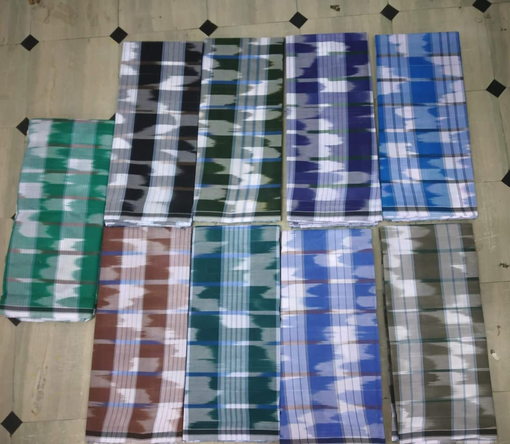
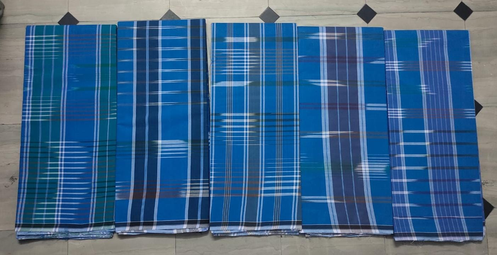
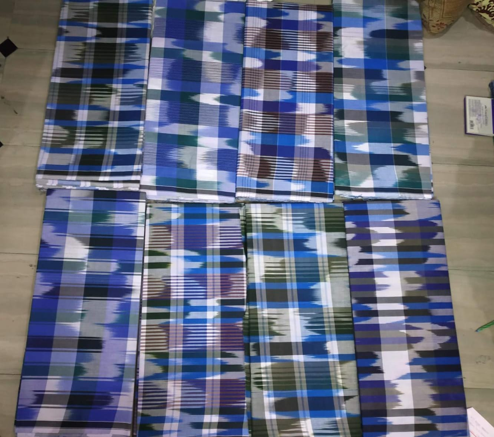

Wholesale checked lungis for Malaysia buyers
Our current collection includes traditional blue checks, multi-colour checks, mixed woven patterns and classic everyday designs. Product availability, composition, dimensions, packing, price and minimum order terms must be confirmed for each enquiry.

Multi-Colour Checks
Bright traditional check combinations for buyer discussions.

Blue Check Collection
Classic blue patterns in several woven check variations.

Traditional Patterns
Checked styles suitable for wholesale sourcing enquiries.
Sourcing traditional lungis for Malaysia?
Send us the design you are interested in, approximate quantity, delivery destination and your business type. This helps us understand the enquiry and connect the right local textile conversation.
Start your Malaysia wholesale lungi enquiry
Include: preferred design • approximate pieces • destination • retailer/wholesaler/distributor • any required specification.
Send enquiry on WhatsApp